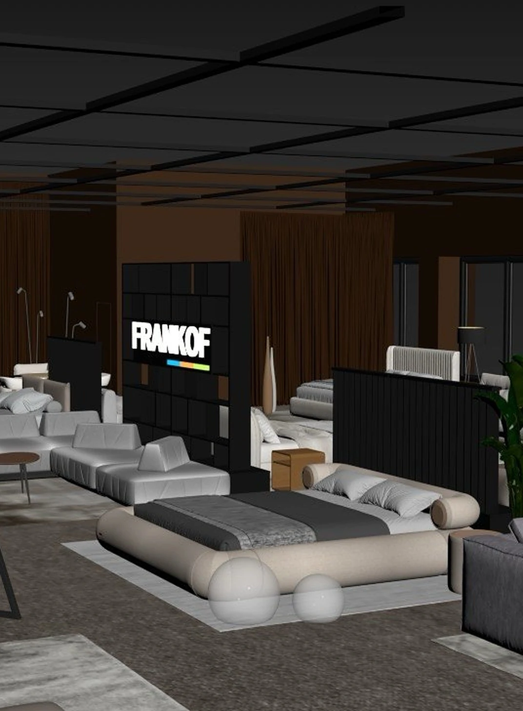

Wnętrze dla welurowego łóżka i szafki nocnejTapicerowane łóżko wymodelowane od zera i pokazane w dwóch kolorach weluru.Otwórz projekt
Wnętrze kuchni dla hokerówJeden hoker, pięć wariantów obicia: linia materiałów do katalogu.Otwórz projekt
 Showroom FRANKOFStrefy showroomu dla kolekcji mebli fabryki, od planogramów w 3ds Max do zrealizowanej przestrzeni.Otwórz projekt